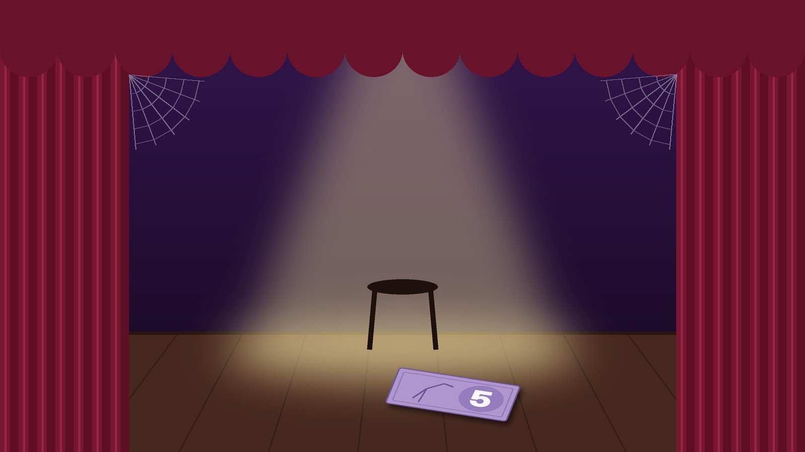

Gravataí · Cultura
R$ 5 por morador: Gravataí deixa a cultura à míngua e depende de Brasília
Entre 2023 e 2025, boa parte do dinheiro foi para obras e aluguel de palco. Para quem faz arte, a prefeitura não tem nenhum repasse com dinheiro próprio, e o fundo prometido fica para 2027.
Redação
20 DE NOV DE 2026, 13:30
Foto: Ilustração. (Sob Vigia)
Gravataí tem cerca de 275 mil moradores. Em 2025, a prefeitura gastou R$ 1,41 milhão com cultura: pouco mais de R$ 5 por morador, no ano inteiro. É 0,11% de tudo o que a prefeitura gastou, ou 11 centavos a cada R$ 100.
Os números são da própria prefeitura. Foram declarados ao Tesouro Nacional e ao Tribunal de Contas do Estado (TCE-RS). O Sob Vigia analisou cada registro de gasto com cultura de 2023, 2024 e 2025, os três anos completos mais recentes com dados disponíveis. Todos os valores desta reportagem se referem a esse período, exceto quando o texto indicar 2026. A Secretaria Municipal de Cultura (SMC) foi procurada e respondeu às perguntas. As respostas estão ao longo do texto.
Gasto com cultura em Gravataí
| Ano | Gasto com cultura | % do gasto total |
|---|---|---|
| 2023 | R$ 1,41 milhão | 0,12% |
| 2024 | R$ 6,93 milhões | 0,54% |
| 2025 | R$ 1,41 milhão | 0,11% |
Em 2024, R$ 4,29 milhões do total vieram de programas federais.
Fonte: Siconfi/Tesouro Nacional e TCE-RS
O ano em que a cultura "cresceu"
Em 2024, o gasto com cultura saltou para R$ 6,9 milhões, quase cinco vezes o de 2023. Mas o salto não veio da prefeitura. 62% do dinheiro (R$ 4,3 milhões) era federal, de duas leis aprovadas no governo Lula para socorrer o setor cultural depois da pandemia:
- Lei Paulo Gustavo: R$ 2,47 milhões;
- Política Nacional Aldir Blanc (PNAB): R$ 1,82 milhão.
Em 2025, sem a Paulo Gustavo, o gasto voltou para R$ 1,41 milhão, praticamente igual a 2023. A cultura de Gravataí só teve fôlego quando Brasília mandou dinheiro carimbado.
A Aldir Blanc de 2025
Em 2025, entraram nos cofres da prefeitura R$ 1,75 milhão da Aldir Blanc, um repasse federal criado para chegar a artistas, coletivos e pontos de cultura por meio de editais. Ao longo de todo o ano, só R$ 28,9 mil desse programa foram gastos, e foram pagos a uma empresa contratada para dar "assessoria na execução da PNAB". Nenhum real do repasse de 2025 chegou a um artista naquele ano.
A Secretaria de Cultura afirma que a execução segue o cronograma dos editais. Segundo ela, R$ 1.336.000 da PNAB "já foram empenhados e pagos", e restam R$ 289.663,88 de três editais, com pagamento previsto ainda este ano. A Secretaria não informou a qual ano de repasse esses valores se referem. Os dados oficiais disponíveis vão só até agosto de 2026 e não permitem confirmar os pagamentos.
Para 2026, a SMC anuncia 46 vagas de projetos culturais (20 de R$ 40 mil e 26 de R$ 19 mil) e três editais da Política Nacional de Cultura Viva, com 17 vagas. Ao todo, são R$ 1,75 milhão, valor praticamente igual ao que a cidade recebeu da Aldir Blanc em 2025. As informações estão no portal da PNAB 2026 da prefeitura. Ou seja, o dinheiro federal que chegou em 2025 está sendo oferecido aos artistas agora, um ano depois.
Empenhado não é gasto
A Secretaria informa que seu orçamento para 2026 é de R$ 5,26 milhões e que R$ 4,54 milhões, ou 86%, "já estão empenhados". Empenhar é reservar o dinheiro para uma despesa, e não pagar por um serviço entregue. A própria SMC lembra que "a liquidação e o pagamento seguem os respectivos procedimentos". Segundo o relatório oficial enviado ao Tesouro, até agosto de 2026 a cidade tinha liquidado, ou seja, recebido serviços e obras, R$ 874 mil em cultura, de uma dotação de R$ 8,4 milhões. O valor da dotação é maior que o orçamento citado pela SMC porque o relatório soma toda a função cultura, inclusive os recursos federais.
Para onde foi o dinheiro da prefeitura
Tirando os programas federais, sobra pouco, e quase nada chega a quem faz arte. O padrão aparece nos três anos analisados. Em 2023, 99,3% do gasto com cultura foi para empresas, e os dois maiores credores ficaram com 68% de tudo:
- uma construtora: R$ 585 mil, na restauração do Casarão dos Bina;
- uma produtora de eventos: R$ 379 mil, em aluguel de estruturas.
Os itens que mais aparecem nos três anos são obras em prédios históricos, aluguel de som, palco, tendas, geradores e banheiros químicos, e repasses a entidades. Em 2025, a maior despesa foi o Carnaval: R$ 400 mil repassados à escola de samba Acadêmicos de Gravataí, metade vinda de emenda parlamentar federal. Isso é 28% de todo o gasto com cultura no ano.
Fomento com dinheiro próprio, só em 2027. Perguntada sobre programas de apoio a artistas com recursos do município, a SMC citou a cessão de espaços públicos, como o Edital Portas Abertas e o Quiosque da Cultura, e a contratação de artistas locais nos grandes eventos. Informou ainda que a Lei de Diretrizes Orçamentárias de 2027, enviada à Câmara, prevê dotação para o Fundo Municipal de Cultura. Ou seja: hoje, não existe repasse direto da prefeitura para quem produz cultura, e o fundo depende da aprovação da Câmara e de quanto será destinado a ele.
As reformas pagas com a verba da cultura
Duas obras chamaram a atenção nos dados.
O telhado da antiga sede da prefeitura custou R$ 614 mil à rubrica "patrimônio histórico" da cultura, em 2024 e 2025. Segundo a SMC, o prédio é reconhecido como patrimônio cultural do município desde 2005 (Decreto 7.048) e hoje abriga a Casa de Cultura. A Secretaria também confirma que, quando a obra foi contratada, o prédio funcionava como sede da prefeitura e abrigava o Gabinete do Prefeito, e que a cultura só ganhou orçamento próprio em 2025. Em 2025, a obra consumiu 21% de tudo o que a cidade gastou com cultura.
O auditório do Centro Administrativo foi reformado com R$ 368 mil da Lei Paulo Gustavo. Segundo a SMC, a destinação foi aprovada pelo Conselho Municipal de Política Cultural, e o espaço foi entregue em dezembro de 2025 como Cine Teatro Municipal, que hoje recebe oficinas de teatro às terças e quintas e grupos profissionais, e será palco do FETEG. A Secretaria de Administração arcou com o restante da obra no prédio.
A comparação com outras reformas mostra o peso dessas escolhas. A sede da Secretaria da Saúde (R$ 591 mil) foi paga pela Saúde, e o telhado do quartel dos Bombeiros (R$ 52 mil), pela Segurança Pública. Nas duas obras da cultura, a explicação da prefeitura existe: patrimônio histórico e equipamento cultural. Mas o resultado é que o pouco dinheiro da cultura pagou o telhado de um prédio que, na época, abrigava o gabinete do prefeito, e uma sala que fica dentro da sede administrativa da prefeitura.
A cultura também pagou a reforma da cobertura do Museu Municipal Agostinho Martha (R$ 26,8 mil, em 2024).
Um evento religioso na conta da cultura
Em 2024, ano de eleição municipal, a prefeitura repassou R$ 280 mil à Associação Gravataiense de Aliança de Pastores Evangélicos para a realização da Marcha para Jesus, em 11 de maio. O dinheiro saiu da rubrica "repasses e auxílios culturais", por meio de um termo de fomento, e corresponde a 65% de tudo o que a prefeitura repassou a entidades culturais naquele ano.
Para comparar: no edital da Aldir Blanc do mesmo ano, um projeto cultural típico recebeu cerca de R$ 21 mil, e os maiores, R$ 50 mil. O valor da Marcha equivale a 13 projetos típicos.
O valor também destoa do histórico do próprio evento. Nos registros de gastos da prefeitura, a edição anterior da Marcha, em dezembro de 2022, aparece com R$ 13,4 mil em aluguel de som e estruturas. Em 2023 e em 2025, anos sem eleição, não há nenhum gasto registrado com o evento:
| Ano | Apoio da prefeitura à Marcha para Jesus |
|---|---|
| 2022 | R$ 13,4 mil (aluguel de som e estruturas) |
| 2023 | nenhum registro |
| 2024 (ano de eleição) | R$ 280 mil (repasse da verba da cultura) |
| 2025 | nenhum registro |
Questionada, a SMC disse que o apoio considera a "dimensão cultural e religiosa" do evento, "como manifestação coletiva, com participação popular", e citou o apoio à Acadêmicos de Gravataí como exemplo de diversidade. A Secretaria não detalhou quais critérios foram usados para escolher esse repasse, nem se outras manifestações religiosas tiveram a mesma oportunidade.
Política cultural é decisão política
A Câmara também não cobra. Dos 11 projetos sobre cultura aprovados pelos vereadores desde 2025, 10 apenas criam datas comemorativas ou títulos. Nenhum trata de recursos, editais ou espaços culturais.
Cultura não é enfeite de calendário. É emprego, é ocupação dos espaços públicos, é alternativa para a juventude. Gravataí gasta R$ 5 por morador com cultura, depende do dinheiro de Brasília para fazer editais e só promete um fundo próprio para 2027. Isso é uma escolha. A pergunta é: para quem?
Fontes
- Gasto anual com cultura e total da prefeitura (2023–2025): Declaração de Contas Anuais, anexo I-E, no Siconfi/Tesouro Nacional, para 2023, 2024 e 2025.
- Repasses da Aldir Blanc recebidos: Declaração de Contas Anuais, anexo I-C, em 2024 e 2025.
- Gasto em 2026 até agosto: Relatório Resumido da Execução Orçamentária, 4º bimestre de 2026, anexo 2.
- Cada gasto, com credor e descrição (2022–2025): dados abertos do TCE-RS, "Despesa orçamentária por empenhos". Contratos e termos citados: Casarão dos Bina (CEO 043/2022); Centro Administrativo e auditório (CEO 024/2023); telhado da antiga sede (CEO 002/2024); sede da Saúde (CEO 021/2024); quartel dos Bombeiros (CEO 020/2023); Marcha para Jesus (Termo de Fomento 005/2024); Carnaval (Termos de Fomento 003/2025 e 05/2025).
- Respostas da Secretaria Municipal de Cultura de Gravataí ao Sob Vigia, em 16/11/2026.
- População: cadastro de entes do Siconfi (275.430 habitantes).
- Projetos de cultura na Câmara: levantamento do Sob Vigia no portal da Câmara de Gravataí.
Leia também
- Aula de empreendedorismo toma o lugar de outras disciplinas em Cachoeirinha, relatam professores; programa já custou R$ 2,4 milhões
- Gravataí pagou R$ 21,9 milhões por 684 telas da empresa citada em investigação da PF; 85% na gestão Zaffalon
- 13º parcelado, UPA no corte… e 7 vereadores de Gravataí correm para socorrer Van Hattem no STF